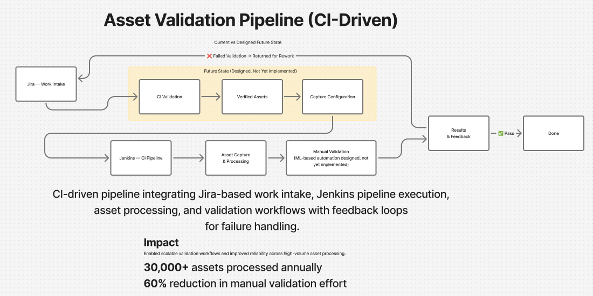
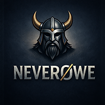
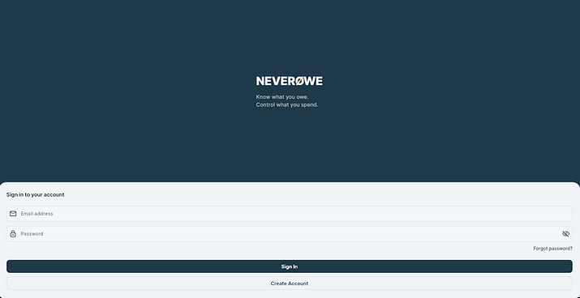
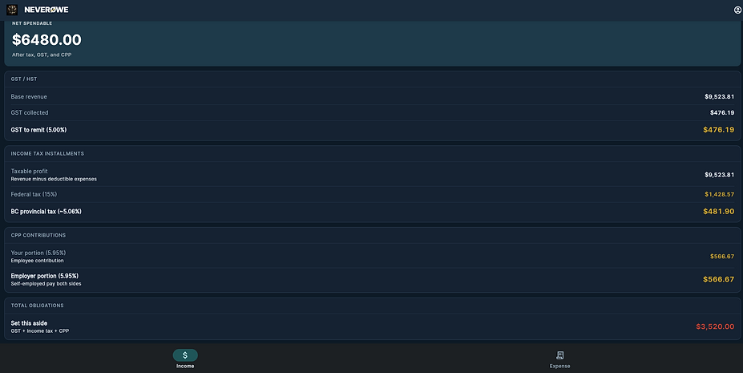
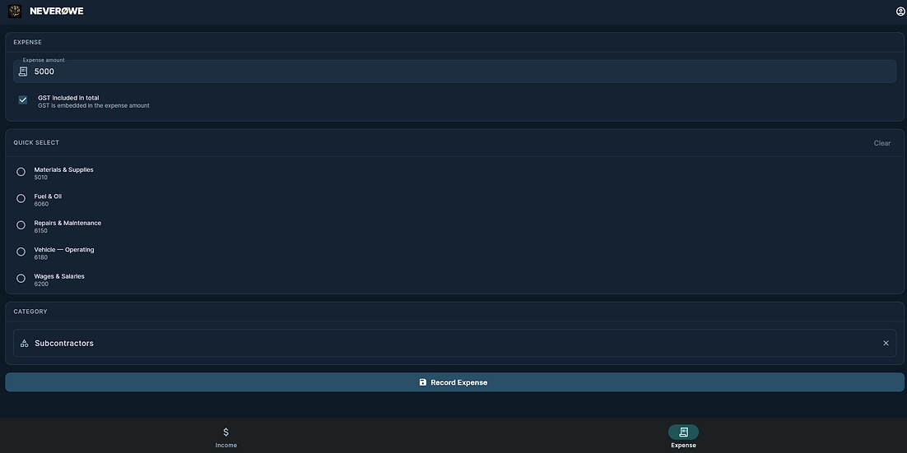

System Failure & Data Recovery
Legacy System Recovery
Rescuing 20 years of financial records from dead software
The Situation
The church treasurer came to me with a crisis. The financial software their organization had relied on for nearly 20 years was dead — unsupported, unrecoverable, and running inside a third-party Windows emulator on a Mac with no original install disk anywhere. Year-end reporting was approaching. Two decades of donation records, household data, and financial allocations were locked inside a format nobody could read anymore.
What I Tried First
Program recovery — restoring the application itself so it could export its own data. That proved impossible. No source, no vendor, no viable path. When the obvious approach fails, you go deeper.
What I Did Instead
I went into the raw database files. The software used DBF files — a format from the early 1990s. I reconstructed the schema by reading file headers and cross-referencing field patterns across tables, then built a Python extraction pipeline to pull, normalize, and validate everything.
- Reconstructed schema from raw DBF file structures with no documentation
- Built Python pipeline to extract, normalize, and validate 20 years of records
- Implemented reconciliation checks that surfaced hidden inconsistencies in the legacy data
Outcome & What's Next
Recovered and validated 20 years of financial records across households, donations, and allocations. The treasurer had clean, structured data before year-end.
I'm now building a replacement system designed for small church treasurers, with potential distribution across a network of 4,000+ organizations. The same principle applies here that applies everywhere I work: the tool has to fit how the person actually works, not demand they change to fit the tool.
Good data and broken workflows produce the same outcome — decisions made in the dark.
Automation & Validation Systems
Electronic Arts — Pipeline Design & Workflow Transformation
Embedded at EA via Keywords Studios for 2.5 years as Technical Development Support, working across distributed production and QA teams on a large-scale game title validation pipeline. When EA wound down the Keywords contract, I was one of ~50 retained from a team of 180.
Key Takeaways
- Automation reduced testing time by ~60% on workflows that ran
- System failure was tied to deployment timing — not design quality
- Change management under peak load is a delivery risk equal to the technical work

What I Owned
I defined the end-to-end requirements and architecture for an automated validation pipeline processing 30,000+ assets annually. The core problem was structural: manual validation was inconsistent, unscalable, and produced no visibility into failure patterns.
I designed the integration between Jira-based intake, Jenkins-driven validation across CI infrastructure, and downstream asset capture — structured to reduce manual intervention, surface data quality issues early, and scale across high-volume production cycles.
I incorporated forward-looking requirements for ML-assisted automated testing, recognizing that near-term ROI would come from capture automation while the ML layer required a longer runway.
- CI infrastructure scaled from 2 to 5 Jenkins farms, reducing processing time from ~48 hours to under 24
- Full implementation projected to reduce manual testing effort by 75–80%
What Happened — and What I Learned
The system was deployed into FC25 peak crunch: two weeks of 10-hour days, the highest asset volume of the year, with testers simultaneously switching from manual to automated workflows under maximum delivery pressure.
Training had been solid. The system was not broken. What surfaced were pre-existing upstream data issues — siloed across continental teams, invisible until load exposed them — that couldn't be diagnosed or resolved mid-crunch. The team sidelined the automation because they had no margin to troubleshoot it when they needed it most.
Even so, the core workflow assistance that did run showed a consistent 60% reduction in testing time.
That experience sharpened something I carry into every project now: a well-designed system deployed at the moment of maximum organizational stress will fail regardless of its quality. Change management timing is not a soft consideration — it is a delivery risk on par with the technical work itself.
Outcome
A separate team — building a greenfield FC sub-title with a longer release window — adopted the full system. They worked through the ML growing pains on a timeline that allowed for it, and shipped.
Product & System Design
NeverØwe
Designed and built from lived experience — a financial system built around how self-employed people actually work, not how accountants wish they would.

TMA real-time financial tracking and obligation management platform for self-employed and gig workers.
Know what you owe.
Control what you spend.

Why I Built This
Sixteen years as a self-employed contractor taught me something no accounting software addresses: the problem isn't that people don't want to manage their finances — it's that the tools demand behavior that doesn't fit how independent workers actually work.
The Problem
Tax obligations accumulate invisibly. By the time year-end arrives the number is fixed and the damage is done.
Separately, reconciling finances is a second job — EOD, EOW, EOY — that nobody signed up for when they went to work for themselves.
The Approach
I designed NeverØwe around Workflow Accounting™: GAAP-based with an immutable ledger, but on mobile it's a 60-second entry at the moment of the transaction.
When your workday is done, your accounting is done. On a larger screen the full picture is there — tax forecasting, scenario modeling, complete records.
You focus on what you're good at. The accounting happens as part of that process, not after it.

System Architecture Highlights
- Event-driven data capture aligned with user actions
- Modular financial processing pipeline (capture → validation → calculation → feedback)
- Integrated tax estimation and forecasting engine (Compass)
- Data integrity enforcement through validation layers
- Real-time feedback loops influencing user decisions
System Design
Designed a modular architecture supporting:
- Transaction capture and categorization
- Tax estimation and forecasting logic
- Data validation and integrity checks
- Event-driven workflows tied to user actions
Incorporated forward-looking design for predictive financial modeling (Compass engine), automated compliance support, and real-time feedback loops for user decisions.

Platform Implementation
- End-to-end backend API for financial processing and validation
- Multi-platform frontend (iOS, Android, web, macOS)
- Integrated services: Supabase, Firebase, Stripe, SendGrid
- CI/CD pipeline supporting continuous deployment
- Environment-driven configuration and data handling
User Workflow
- Quick Select for frequently used accounts
- Adaptive prioritization (recent + pinned categories)
- Minimal input required at point of transaction
- Reduced cognitive load during data entry
Impact
- Reframed accounting from a retrospective chore into a real-time decision tool
- Eliminated the year-end tax surprise through continuous obligation tracking
- Reduced the cognitive cost of financial management to under 60 seconds per transaction
- Built a foundation that extends into predictive modeling, automated compliance, and scenario planning
Product Overview
Explore the product design, system architecture, and implementation approach behind NeverØwe.